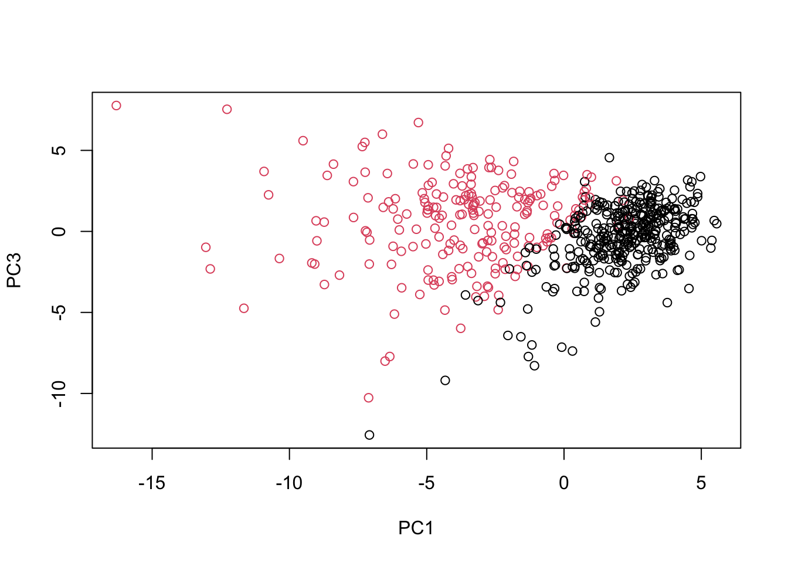

# First diagnosis column removed before doing analysis. wisc.data <- wisc.df[,-1]
# Delete the last column "X". wisc.data <- wisc.data[,-31]
#create a vector for diagnosisdiagnosis <-as.factor(wisc.df$diagnosis)
2. Principal Component Analysis
The main PCA fucntion in base R is called prcom()
Before doing anything like PCA, it is important to check if the data need to be scaled. Recall two common reasons for scaling data include: - The input variables use different units of measurement. - The input variables have significantly different variances.
# Check column means and standard deviationscolMeans(wisc.data)
Q7. What stands out to you about this plot? Is it easy or difficult to understand? Why?
This plot above is a little bit hard to understand because it’s messed up with all labels and I couldn’t really tell how the two conditions separates.
# Scatter plot observations by components 1 and 2plot(pc$PC1, pc$PC2, col = diagnosis , xlab ="PC1", ylab ="PC2")
plot(wisc.pr$x[, c(1,2)], col = diagnosis, xlab ="PC1", ylab ="PC3")

Q8. Generate a similar plot for principal components 1 and 3. What do you notice about these plots?
It still separates the observations but it has more overlapping compared to the plot for PC1 and PC2, because PC2 explains more variance in this dataset than PC3 does.
# Repeat for components 1 and 3plot(wisc.pr$x[, c(1,3)], col = diagnosis, xlab ="PC1", ylab ="PC3")
Q9. For the first principal component, what is the component of the loading vector (i.e. wisc.pr$rotation[,1]) for the feature concave.points_mean? This tells us how much this original feature contributes to the first PC.
The goal of this section is to do hierarchical clustering of the original data. Recall from class that this type of clustering does not assume in advance the number of natural groups that exist in the data (unlike K-means clustering).
First we need to scale the wisc.data and assign the result to data.scaled.
# Scale the wisc.data data using the "scale()" functiondata.scaled <-scale(wisc.data)
Calculate the (Euclidean) distances between all pairs of observations in the new scaled dataset and assign the result to data.dist.
data.dist <-dist(data.scaled)
Create a hierarchical clustering model using complete linkage. Manually specify the method argument to hclust() and assign the results to wisc.hclust.
This looks much nicer than our previous clustering result. Let’s find the two major clusters with the cutree() functions.
grps <-cutree(wisc.pr.hclust, k=2)table(grps)
grps
1 2
203 366
table(grps, diagnosis)
diagnosis
grps B M
1 24 179
2 333 33
We could calculate accuracy - the proportion of samples we got correct if we take cluster 1 to represent all M and cluster 2 to represent all B.
(179+333)/nrow(wisc.data)
[1] 0.8998243
Q11. OPTIONAL: Can you find a better cluster vs diagnoses match by cutting into a different number of clusters between 2 and 10? How do you judge the quality of your result in each case?
We can techniquely try out using different number of clusters. And we can use the table() function to see how much “M” and “B” are in each group. We can calculate the accuracy of our model by calculating how many cases are predicted/clustered correctly in this dataset like what’s shown above.
Q12. Which method gives your favorite results for the same data.dist dataset? Explain your reasoning.
The ward.D2 method gives me favorite results because it minimizes the variance across the clusters.
Specificity and Sensitivity
Sensitivity refers to a test’s ability to correctly detect ill patients who do have the condition. In our example here the sensitivity is the total number of samples in the cluster identified as predominantly malignant (cancerous) divided by the total number of known malignant samples. In other words: TP/(TP+FN).
Specificity relates to a test’s ability to correctly reject healthy patients without a condition. In our example specificity is the proportion of benign (not cancerous) samples in the cluster identified as predominantly benign that are known to be benign. In other words: TN/(TN+FN).
Use the distance along the first 7 PCs for clustering i.e. wisc.pr$x[, 1:7]
diagnosis
wisc.pr.hclust2.clusters B M
1 28 188
2 329 24
Q13. How well does the newly created model with four clusters separate out the two diagnoses?
It separates the two diagnoses pretty well if we look at the accuracy of what proportion of diagnosis is predicted correctly, calculation shown below.
Let’s calculate the accuracy.
(188+329)/nrow(wisc.data)
[1] 0.9086116
Q14. How well do the hierarchical clustering models you created in previous sections (i.e. before PCA) do in terms of separating the diagnoses? Again, use the table() function to compare the output of each model (wisc.km$cluster and wisc.hclust.clusters) with the vector containing the actual diagnoses.
table() results copied from above: diagnosis grps B M 1 12 165 2 2 5 3 343 40 4 0 2
Q15. OPTIONAL: Which of your analysis procedures resulted in a clustering model with the best specificity? How about sensitivity?
Clustering with PCA using 1:7PCs gives highest sensitivity of 0.8867925, the hierarchical clustering gives highest specificity of 0.9661972. Working shown below.
wisc.pr.hclust: diagnosis grps B M 1 24 179 2 333 33
#Sensitivity179/(179+33)
[1] 0.8443396
#Specificity333/(333+24)
[1] 0.9327731
diagnosis wisc.pr.hclust2.clusters B M 1 28 188 2 329 24
#Sensitivity188/(188+24)
[1] 0.8867925
#Specificity329/(329+28)
[1] 0.9215686
wisc.hclust diagnosis grps B M 1 12 165 2 2 5 3 343 40 4 0 2
#Sensitivity165/(165+40)
[1] 0.804878
#Specificity343/(343+12)
[1] 0.9661972
Prediction
#url <- "new_samples.csv"url <-"https://tinyurl.com/new-samples-CSV"new <-read.csv(url)#predict the PC values for new dataset. npc <-predict(wisc.pr, newdata=new)npc